Logic Circuits Design Laboratory
Shiraz University • Fall 2025
Professor: Dr. Khunjush
TAs: Mohsen Mirzaei | Sina Liaghat | Parmida Hooshang
Artin Zarei | Parsa Karimdadi | Mohammad Reza Hadian
Introduction
What is this course about?
It's about implementing what you learned in the Logic Circuits Design course.
What will you learn in this course?
You will learn how to implement combinational and sequential circuits using basic logic gates, both on a breadboard and in Proteus on your computer.
Grading Policy
Grade Breakdown:
🧑🏫 Attendance & Lab Experiments: 60%
📝 Assignments: 25%
💡 Final Project: 15%
Overview
Fundamentals
Session 1
What is a Breadboard?
A reusable solderless platform for prototyping electronic circuits. It allows quick connections without permanent soldering.

What are Jumper Wires?
They are simply conductors used to make temporary connections between components on a breadboard.

What is an LED?
A Light Emitting Diode (LED) is a semiconductor device that emits light when current flows through it.

What is a Resistor?
A passive component that limits current flow. Its color bands indicate the resistance value. Resistors are essential for protecting LEDs and setting logic levels.

Into the Combinational World
Session 2
What do we call a combinational logic circuit?
The output depends on the combination of inputs at a specific point of time with total disregard to the previous states of the inputs.

Logic gates: the building blocks
We use ICs that act as different logic gates we draw on paper.
Each IC has a map that tells us the purpose of its pins.
You can find these maps in the appendix.

ICs and Breadboard
Remember how the rows were connected on the breadboard?
If the pins were in the same row, the IC would short circuit!
We place the IC on the ravine (middle divider) to separates its pins.

Convention
To simplify debugging, it's best practice to place the IC in a way that it points to the power supply.

Convention
This way, it's easier to find the desirable pins.

Time for Action!
Let's implement this simple logic circuit on the breadboard.
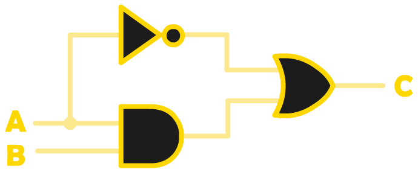Quick Review
Remember these gate equalities?
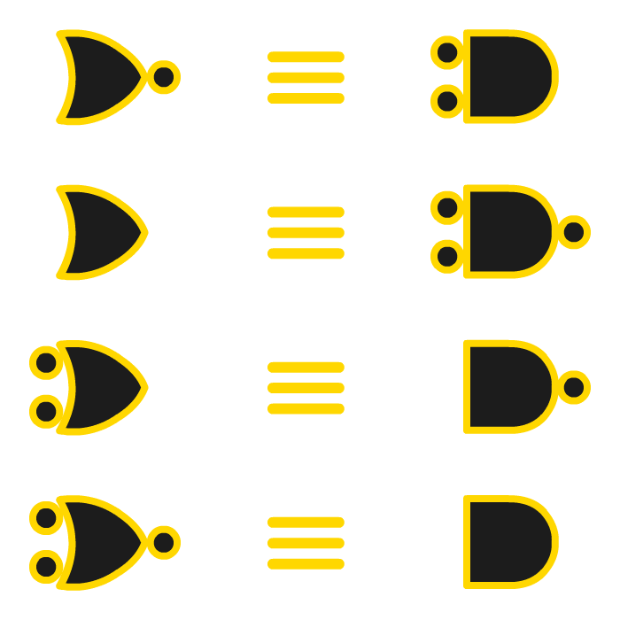Quick Review (cont'd)
And, also remember that you can implement any logic circuit using universal gates, NAND and NOR.
For example, you can create a NOT gate using one NAND gate. Any other logic gate can be implement using NAND and NOR as well.
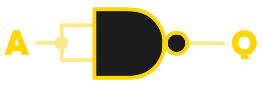Let's get creative!
Finding the minimum number of logic gates to implement a circuit is crucial when it comes to optimization.
Moreover, note that it's often practical to implement logic circuits using only universal gates.
With that in mind:
Design a logic circuit that behaves like an XOR gate.
You can only use NAND gates.
Make sure that you use as few gates as possible.
Solution on the next slide...
Solution
If you draw the truth table of XOR, you realize that you can implement it this way:
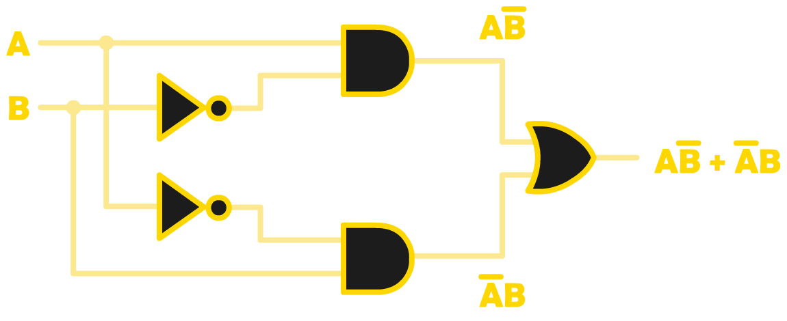Now, use the equalities and change each gate into NAND gates.
Solution (cont'd)
By substituting the gates, you achieve this circuit:
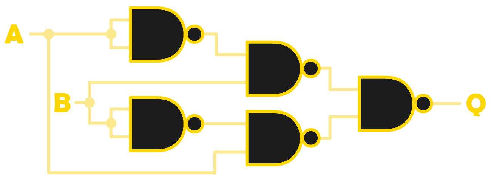But, is it really the minimum number of gates?!
Solution (cont'd)
With a little creativity, you can derive this implementation, which minimizes the number of gates:
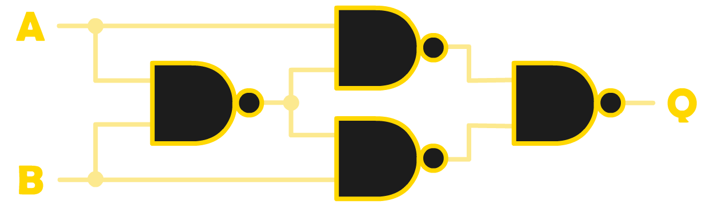Now, implement this circuit on a breadboard.
Combinational Playground
Session 3
Our plan for this session:
We are going to design and implement two logic circuits.
They are two essential blocks that are utilized even in complex logic circuits.
Let's have some fun playing with combinational logic!
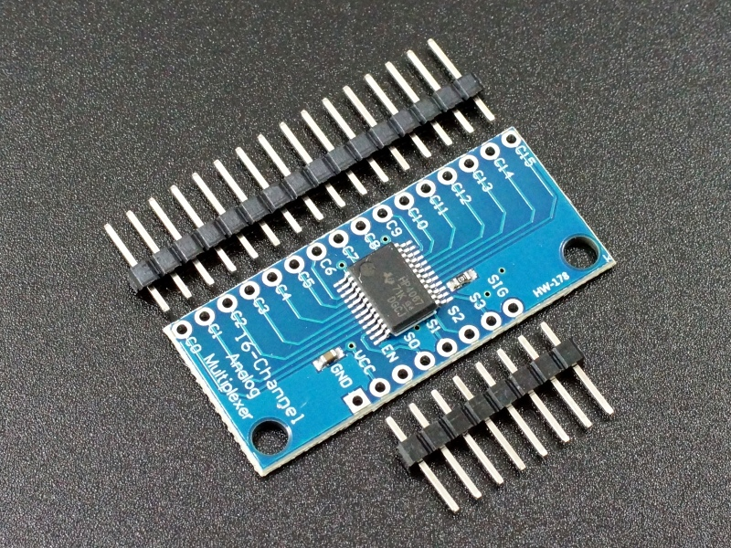Story Time
There are three mediocre chips working together on a board. There is a bus using which they can communicate with their manager, the CPU. However, they have to share this bus.
As you can expect, these colleagues can never agree on what data (0 or 1) should be transferred through the bus.
They have taken the motherboard's advice and decided to take a poll every time they want to send a bit. This way, everyone is treated fairly...
Your Task
Design and implement a simple logic circuit that takes their votes and announces what data should be transferred.
More formally, design a majority circuit that produces the result based on three input signals.
Solution
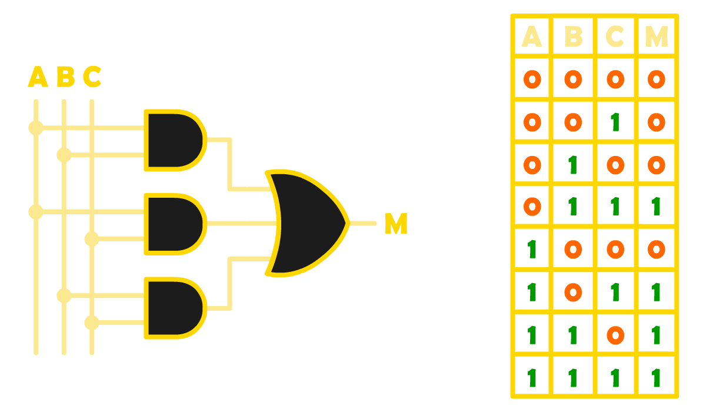Story Time
After plenty of disputes among the colleagues, the smartest chip finally got a promotion and now has her own brand-new bus. The other two colleagues still need to share the bus, though.
Now that only two chips share the bus, your majority circuit is no longer of use!
After realizing the situation, the manager decides to choose which chip gets to work with the bus at different points of time.
Your Task
Design a logic circuit that helps the manager dedicate the bus to the desired chip.
More formally, design and implement a 2-to-1 multiplexer using logic ICs.
Draw the truth table, derive the Sum of Products form, and implement it using logic gates.

Solution
SoP: \(C = (A . \overline S) + (B . S)\)
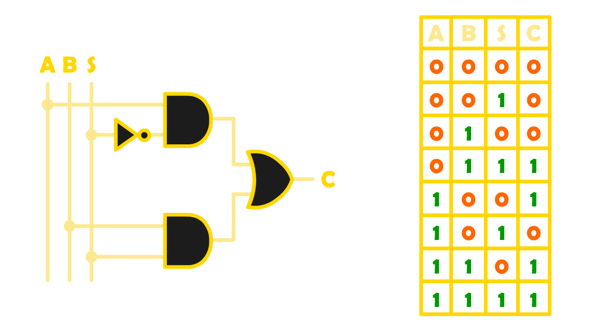Into the Arithmetic World
Session 4
Can you implement a Half Adder circuit?
First, remember the Half Adder logic and its two outputs: SUM and CARRY. Then, draw the Karnaugh maps for both outputs. Finally, derive the simplified Boolean equations from your K-maps.
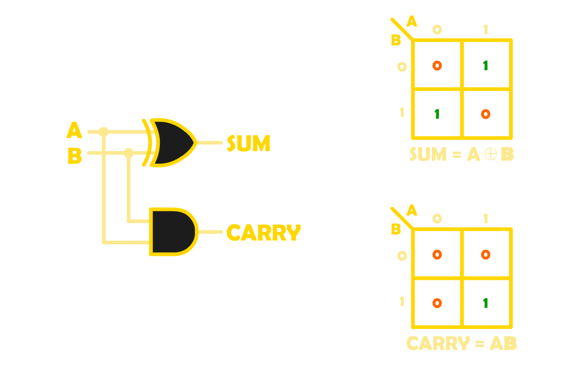Can you implement a Full Adder circuit using two Half Adders?
Think about how two Half Adders can be connected to handle three inputs: A, B, and Cin. Then, draw the Karnaugh maps for both SUM and Cout to verify your logic. Finally, justify why your design correctly performs addition.
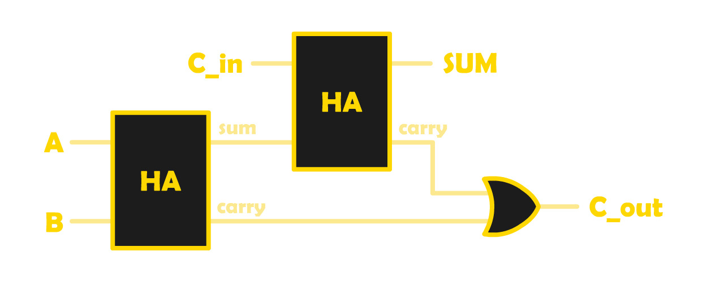Sequential
Sequential
Sequential
Proteus
Appendix
Resistor Color Table
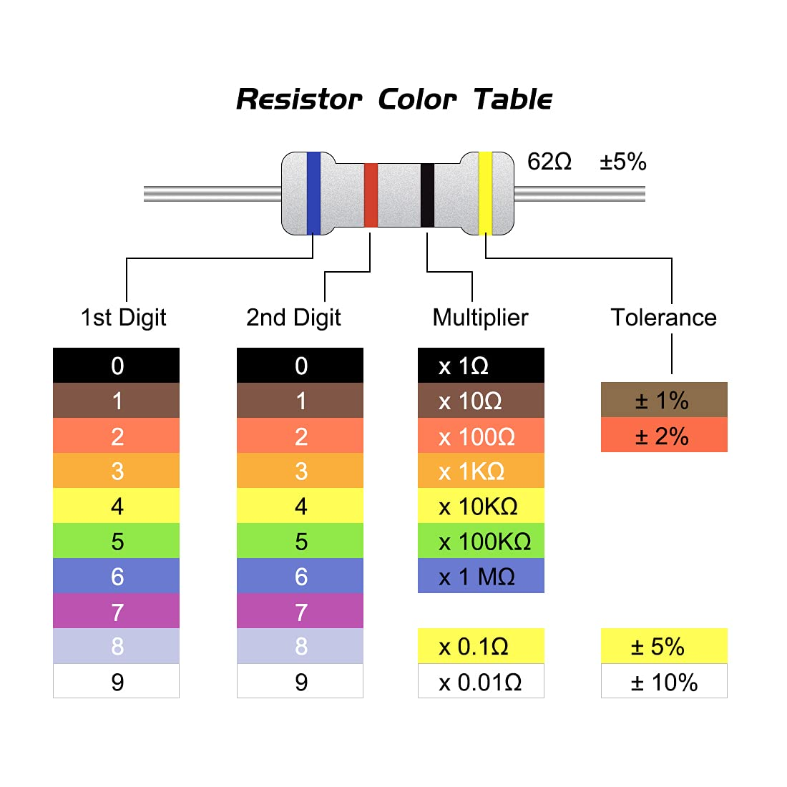AND 7408 Map
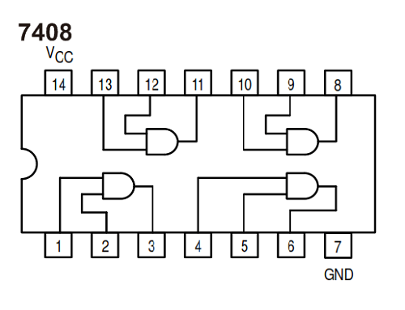OR 7432 Map
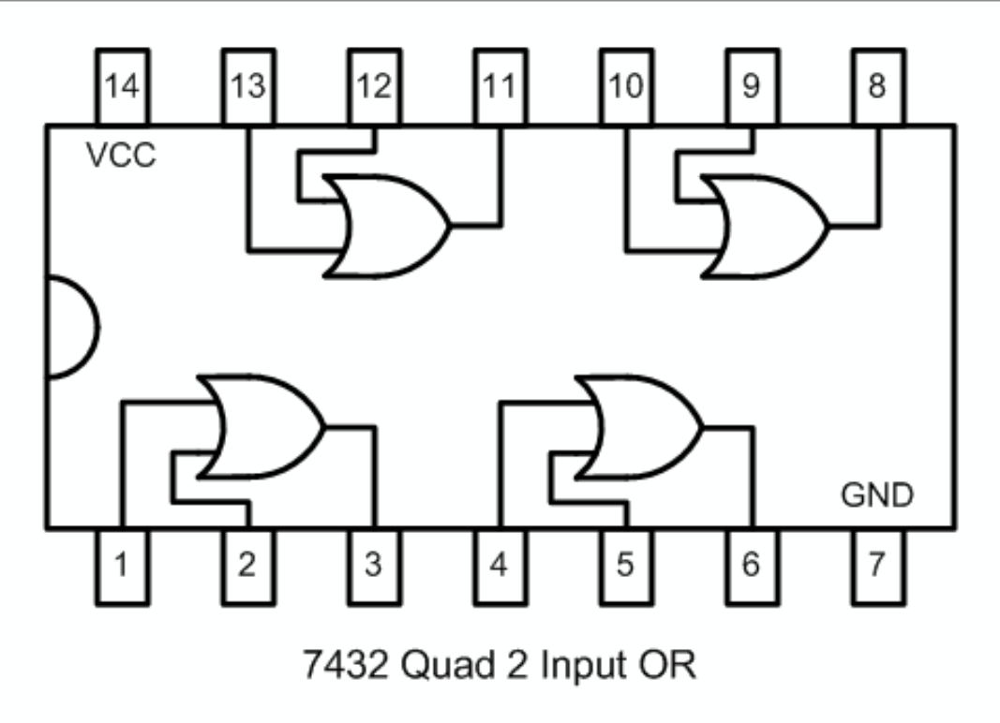NAND 7400 Map
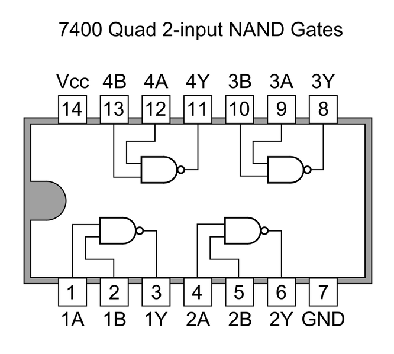NOT 7404 Map
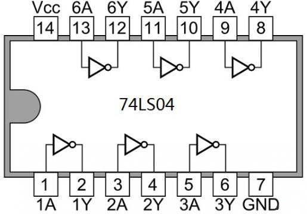XOR 7486 Map
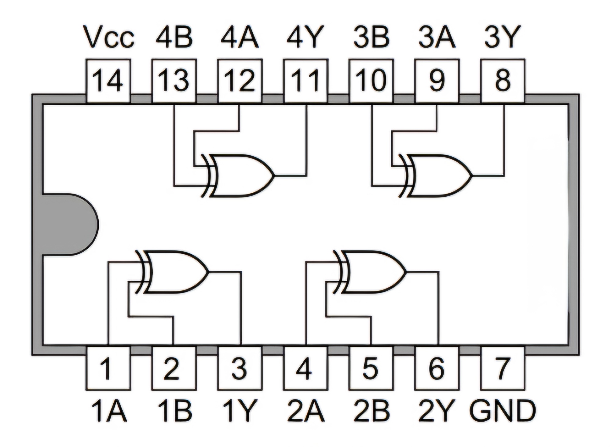